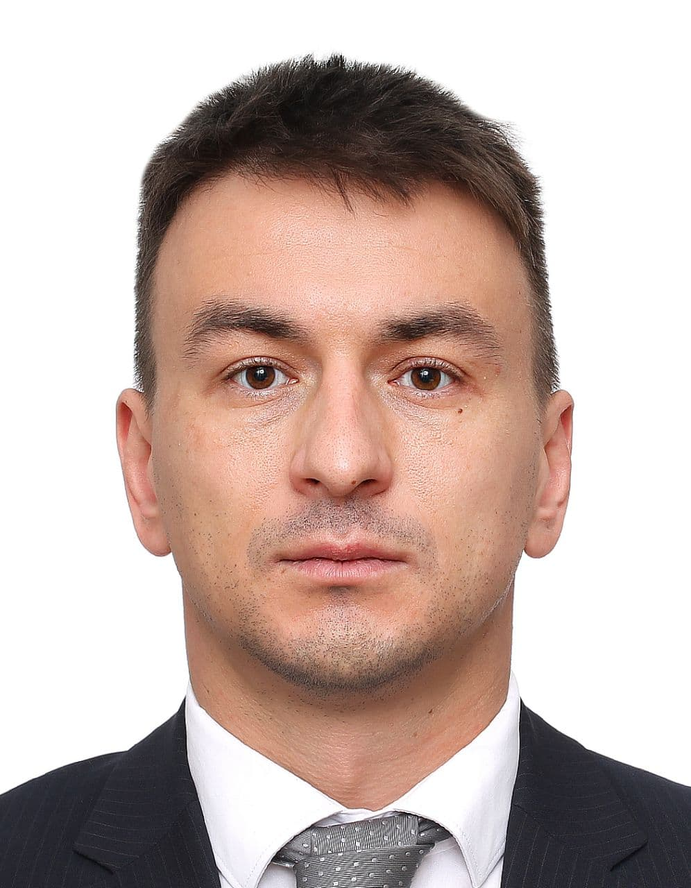

Акишев
Михаил
Анатольевич
Python developer
Образование
| 2006 – 2011 Бакалавриат |
УрГУ им. М. Горького Факультет: Математико-механический Направление «Механика. Прикладная математика» Форма очная (бюджет) |
| 2012-2014 магистратура (не окончена) |
УрФУ, им. первого Президента России Б.Н.Ельцина Факультет: Высшая школа экономики и менеджмента (ВШЭМ) Направление: «Международный Финансовый Менеджмент» Форма очная (бюджет) |
Дополнительное образование и навыки
| ACCA | F1(Accounting in Business) F2(Management Accounting) F3(Financial Accounting) F4(Laws RU) F8(Audit) |
| Курс Python-разработчик (Hexlet.io) |
Обучение включает в себя:
|
Опыт работы
| Июль 2019- февраль 2022 г. 2 года 7 месяцев | ОАО «МРСК Урала» Главный специалист департамента внутреннего аудита Ключевой опыт: Анализ бизнес-процессов (оценка рисков, наличие соответствующих контрольных процедур, тестирование дизайна и эффективности контрольных процедур). Работа с нормативной документацией. Проверка соответствия процессов требованиям законодательства. Аудит ФХД (аудит финансовой и управленческой отчетности). |
| Май 2019 – Июнь 2019 2 месяца | Точка, банк IT-аудит Ключевой опыт: Проверка соответствия внутренних процессов требования законодательства и лучшим практикам (COBIT, ITIL, ITSM и пр.) Работа с нормативной документацией в области ИТ (382-П, 672-П, 683-П, 684-П, PCI DSS, ГОСТ Р 57580 и др.) |
| Январь 2015 – Февраль 2019 4 года 2 месяца (с учётом стажировки) | KPMG Ассистент аудитора (А3) Ключевой опыт: - Анализ бизнес-среды клиентов, оценка реализованных контролей, тестирование их эффективности; - Подготовка и аудит финансовой отчетности в соответствии с РСБУ и МСФО; - Трансформация отчетности из РСБУ в МСФО; - Проверка разделов отчетности: выручка, себестоимость, запасы, ДЗ, КЗ, кредиты и займы, основные средства, капитал, инвестиции, прочие доходы и расходы, налоги (НДС, налог на прибыль, налог на имущество, налог на землю НДПИ), ТЦО и др. - Взаимодействие с клиентами в ходе аудита; - Подготовка писем менеджменты и акционерам компании по результатам аудита (сопроводительные, аудиторский отчет и пр.) - Контроль выполнения работы младшим персоналом в ходе работы над проектами; - Взаимодействие с зарубежными компаниями в ходе аудита - Перевод рабочих документов с русского на английский и английского на русский. Компании, в аудите отчетности которых принимал участие: ООО «Лукойл-Западная Сибирь» ООО «Лукойл Пермь» АО «ЧЦЗ» (Челябинский цинковый завод) АО «Учалинский ГОК» (Компания группы УГМК) АО «ЮАИЗ» (Южноуральский арматурно-изоляторный завод) ООО «УГМК-Холдинг» Прочие проекты (не аудит)Ж АО «Транснефть – Сибирь» АО «Транснефть – Дальний Восток» (Оценка выполнения инвестиционной программы развития) ПАО «Метафракс» (Подготовка финансовой отчетности в соответствии с US GAAP) АО «ДОМ.РФ» (внедрение системы бухгалтерского учета) |
| Январь 2011 – Декабрь 2014 3 года | ГБУЗ СО «БСМЭ» (буро суд-мед экспертизы) Системный администратор Обязанности: - ИТ-безопасность, администрирование и обслуживание локальной сети (>120 ПК) Опыт и достижения: Пусконаладка сети с доменом и сервером на базе Windows Server 2003 (установка и настройка ПО, сетевых сервисов), обучение пользователей, проведение тренингов по ИТ безопасности и пользованию сервисами. ТЭО формирования полноценного ИТ отдела, подбор кадров. |
| Январь 2009 – Январь 2011 2 года 1 месяц | ООО «HiTech» ИТ-специалист Опыт: Аудит, проектирование и администрирование локальных сетей, ИТ-поддержка, обучение клиентов и внедрение базовых элементов ИТ безопасности, взаимодействие с клиентами. |
Дополнительная информация
- Спортсмен
- Хороший человек